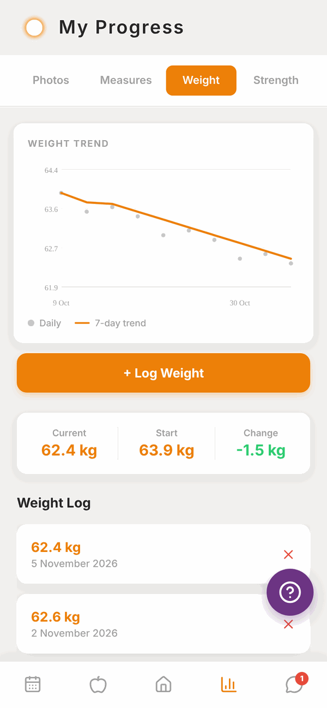
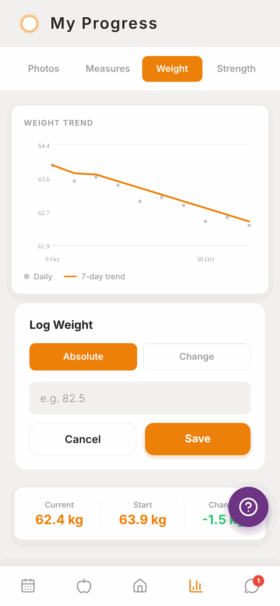
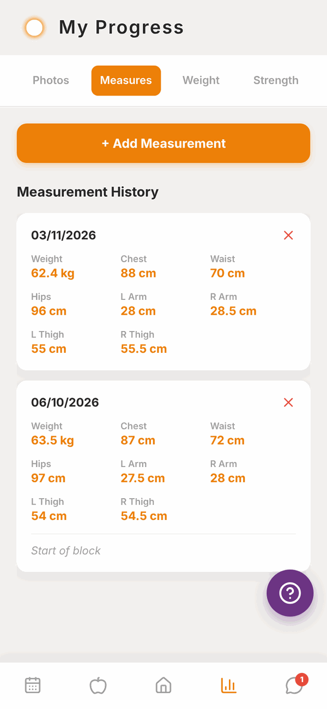
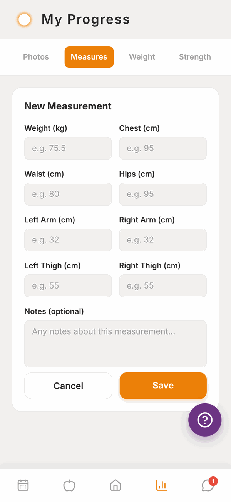
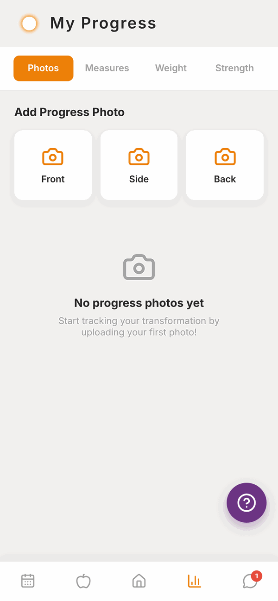
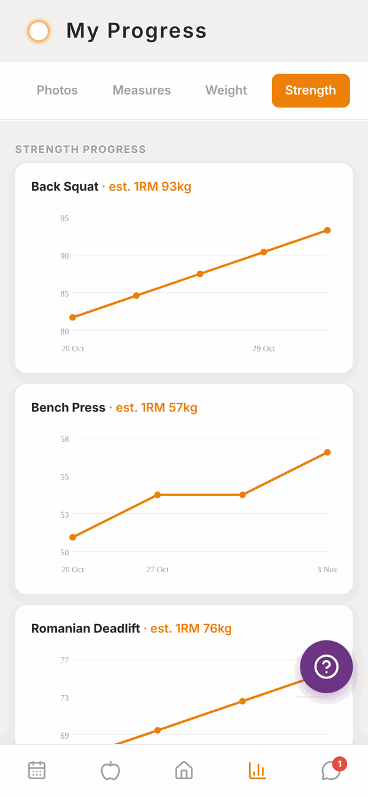

Totality for clients
Progress: weight, measurements, photos and strength
Log your weight and body measurements, add progress photos and see your strength graphs.
Tap the bar chart button at the bottom of the screen to open My Progress. It has four tabs along the top: Photos, Measures, Weight and Strength. Your trainer can see everything here.
Weight#
Tap Weight.

At the top, the WEIGHT TREND graph shows each weigh-in as a dot and a smooth 7-day trend line. The trend line evens out the day to day ups and downs, so it's the one to watch.
Below the graph are your Current weight, your Start weight and the Change between them, then your Weight Log list.
Log your weight#
- Tap + Log Weight.
- Leave Absolute selected and type your weight.
- Tap Save.

Tap Change instead of Absolute if you'd rather type how much you went up or down since last time, for example -0.4. A Will be logged as line shows the new weight before you save. You need at least one normal weigh-in first.
To delete a weigh-in, tap the red x on it in the Weight Log, then confirm with Delete?.
The weight you type in a weekly check-in is also added to your Weight Log.
Measurements#
Tap Measures.
- Tap + Add Measurement.
- Fill in any of: Weight, Chest, Waist, Hips, Left Arm, Right Arm, Left Thigh, Right Thigh. You don't need all of them, just at least one.
- Add Notes if you like.
- Tap Save.


Each measurement shows in Measurement History with its date. Tap the red x to delete one.
Progress photos#
Tap Photos.
- Under Add Progress Photo, tap Front, Side or Back.
- Allow Totality to use your photos if your phone asks.
- Pick the photo. It uploads straight away.

Your photos show in Photo History with the date. Tap the small x on a photo to delete it.
Progress photos are private. They're stored securely and only you and the people coaching you (your trainer, and your gym's staff if you're a gym member) can see them.
Strength#
Tap Strength to see a graph of your estimated one rep max (est. 1RM) over time for each exercise you've logged. Five exercises show first. Tap Show ... more exercises at the bottom to see the rest.

These graphs fill in automatically from your workouts. There's nothing to type.
Questions#
My trainer says they can't see my progress photos.
Check the photo finished uploading (you'll see "Uploading..." while it does). If it shows in your Photo History, your trainer can see it too.
I logged the wrong weight.
Tap the red x next to it in the Weight Log to delete it, then log the right one.
Why is there no trend line?
You need at least two weigh-ins. Keep logging and it appears.
Can I change kg to lb, or cm to inches?
Yes. Go to Settings and tap Units and region. Your saved numbers don't change, they just show in the new units. See Settings.
Why is the Strength tab empty?
It fills in once you've logged workouts with weights. Finish a workout and check back.
Can I take a photo with the camera from here?
The Photos tab picks from your photo library. Take the photo with your camera app first, then add it.